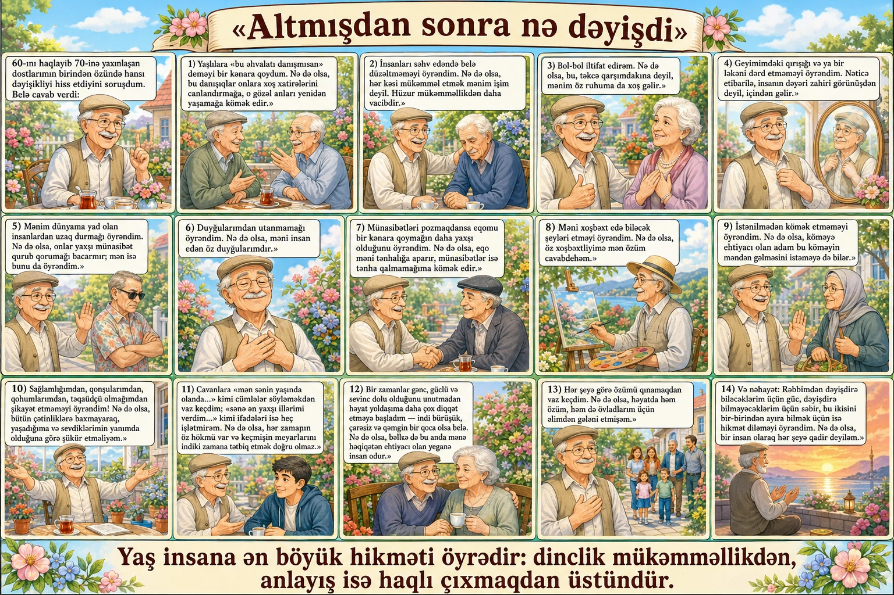

Altmışdan sonra nə dəyişdi
60-ını haqlayıb 70-inə yaxınlaşan dostlarımın birindən özündə hansı dəyişikliyi hiss etdiyini soruşdum. Belə cavab verdi:
Yaşlılara «bu əhvalatı danışmısan» deməyi bir kənara qoydum. Nə də olsa, bu danışıqlar onlara xoş xatirələrini canlandırmağa, o gözəl anları yenidən yaşamağa kömək edir.
İnsanları səhv edəndə belə düzəltməməyi öyrəndim. Nə də olsa, hər kəsi mükəmməl etmək mənim işim deyil. Hüzur mükəmməllikdən daha vacibdir.
Bol-bol iltifat edirəm. Nə də olsa, bu, təkcə qarşımdakına deyil, mənim öz ruhuma da xoş gəlir.
Geyimimdəki qırışığı və ya bir ləkəni dərd etməməyi öyrəndim. Nəticə etibarilə, insanın dəyəri zahiri görünüşdən deyil, içindən gəlir.
Mənim dünyama yad olan insanlardan uzaq durmağı öyrəndim. Nə də olsa, onlar yaxşı münasibət qurub qorumağı bacarmır; mən isə bunu da öyrəndim.
Duyğularımdan utanmamağı öyrəndim. Nə də olsa, məni insan edən öz duyğularımdır.
Münasibətləri pozmaqdansa eqomu bir kənara qoymağın daha yaxşı olduğunu öyrəndim. Nə də olsa, eqo məni tənhalığa aparır, münasibətlər isə tənha qalmamağıma kömək edir.
Məni xoşbəxt edə biləcək şeyləri etməyi öyrəndim. Nə də olsa, öz xoşbəxtliyimə mən özüm cavabdehəm.
İstənilmədən kömək etməməyi öyrəndim. Nə də olsa, köməyə ehtiyacı olan adam bu köməyin məndən gəlməsini istəməyə də bilər.
Sağlamlığımdan, qonşularımdan, qohumlarımdan, təqaüdçü olmağımdan şikayət etməməyi öyrəndim! Nə də olsa, bütün çətinliklərə baxmayaraq, yaşadığıma və sevdiklərimin yanımda olduğuna görə şükür etməliyəm.
Cavanlara «mən sənin yaşında olanda...» kimi cümlələr söyləməkdən vaz keçdim; «sənə ən yaxşı illərimi verdim...» kimi ifadələri isə heç işlətmirəm. Nə də olsa, hər zamanın öz hökmü var və keçmişin meyarlarını indiki zamana tətbiq etmək doğru olmaz.
Bir zamanlar gənc, güclü və sevinc dolu olduğunu unutmadan həyat yoldaşıma daha çox diqqət etməyə başladım — indi bürüşük, çarəsiz və qəmgin bir qoca olsa belə. Nə də olsa, bəlkə də bu anda mənə həqiqətən ehtiyacı olan yeganə insan odur.
Hər şeyə görə özümü qınamaqdan vaz keçdim. Nə də olsa, həyatda həm özüm, həm də övladlarım üçün əlimdən gələni etmişəm.
Və nəhayət: Rəbbimdən dəyişdirə biləcəklərim üçün güc, dəyişdirə bilməyəcəklərim üçün səbir, bu ikisini bir-birindən ayıra bilmək üçün isə hikmət diləməyi öyrəndim. Nə də olsa, bir insan olaraq hər şeyə qadir deyiləm.
Yaş insana ən böyük hikməti öyrədir: dinclik mükəmməllikdən, anlayış isə haqlı çıxmaqdan üstündür.
